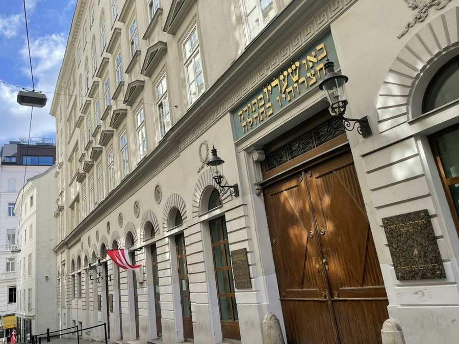

IKG/Шмидл
Благодаря своему историческому и культурному значению Штадттемпель в Вене является обязательным местом посещения для всех, кто посещает город. С 1811 года он является духовным центром еврейской общины Вены. Бывший Демпфингерхоф, первоначально расположенный в Seitenstettengasse 4, служил местом еврейской религиозной жизни. Хотя император Иосиф II издал в 1782 году «Патент толерантности», предоставлявший еврейскому населению больше свобод, публичная практика иудаизма не была включена в него.

Tolerancebethäuser, или некатолические места отправления культа, должны были быть «скрыты» от общественного взгляда и не распознаваться явно извне. В результате синагога была включена в более крупный строительный комплекс. Он действовал как непризнанная синагога и община, проводя богослужения и праздники за закрытыми дверями. Это была единственная синагога, которая не была разрушена во время так называемой Хрустальной ночи (Погромнахта). Штадттемпелис теперь открыт как для верующих, так и для туристов. Туры также можно забронировать через веб-сайт www.jewishinfopoint.at/ в кратчайшие сроки.
Строительство Штадттемпеля было завершено в 1826 году и было запланировано архитектором Йозефом Корнхойзелем, который был известен своими работами над выдающимися зданиями, такими как Театр в Йозефштадте. Декорации с золотыми цветочными мотивами и внутренняя планировка, включающая галерею, сцену, платформу, паркетный пол и ложи, напоминают традиционный венский театр. В центре внимания находится сцена, на которой находится Бима (кафедра) и кафедра. Вход в Штадттемпель — это замечательный опыт. Высокие потолки и великолепные люстры создают атмосферу преданности и духовности. Элегантно построенный ковчег, в котором хранится Тора, отражает богатые традиции и церемонии иудаизма. Каждая особенность синагоги тщательно продумана, создавая атмосферу, побуждающую к размышлениям.

Штадттемпель является выдающимся центром еврейской жизни в Вене. Помимо регулярных богослужений, он предлагает еженедельные празднования Шаббата, церемонии бар- и бат-мицвы, свадьбы и другие еврейские праздники. Ярон Энгельмайер, главный раввин Вены, и Шмуэль Барзилай, главный кантор, служат в Штадттемпеле. Если вы хотите посетить Stadttempel для молитвы без экскурсии или не являетесь членом IKG Wien (Israelitische Kultusgemeinde Wien (Еврейская община Вены)), вы можете найти дополнительную информацию на главном сайте Stadttempel.
Штадттемпель также отдает дань памяти австрийским еврейским жертвам Холокоста. До Второй мировой войны в Вене проживало около 200 000 евреев, что составляло 90% еврейского населения Австрии. В результате прихода Гитлера к власти и захвата Австрии нацистским режимом 100 000 евреев были вынуждены бежать, а 62 400 были убиты в лагерях смерти и концентрационных лагерях. Имена этих еврейских жертв, официально исследованные Архивом документации австрийского Сопротивления, появляются на огромных черных сланцевых панелях в вестибюле Штадттемпеля. Как памятник, эти панели организованы в форме книги вокруг колонны. Разбитая гранитная колонна символизирует судьбу евреев в двадцатом веке, а стеклянная конусообразная колонна продолжает опускаться вниз, символизируя новое начало после Холокоста. Внутри синагоги установлены дополнительные памятные доски с именами жертв и членов общины.
Штадттемпель в Вене обязателен к посещению всем, кто интересуется богатой исторической и культурной историей города. Она сыграла важную роль в истории города как центр веры еврейского населения Вены с 1811 года. Благодаря сложной внутренней планировке синагога очаровывает туристов своей архитектурной красотой. Кроме того, Штадттемпель — это оживленный центр еврейской жизни, где проводятся разнообразные религиозные ритуалы и мероприятия, а также в память жертв австрийского еврейского Холокоста возводятся движущиеся мемориалы.